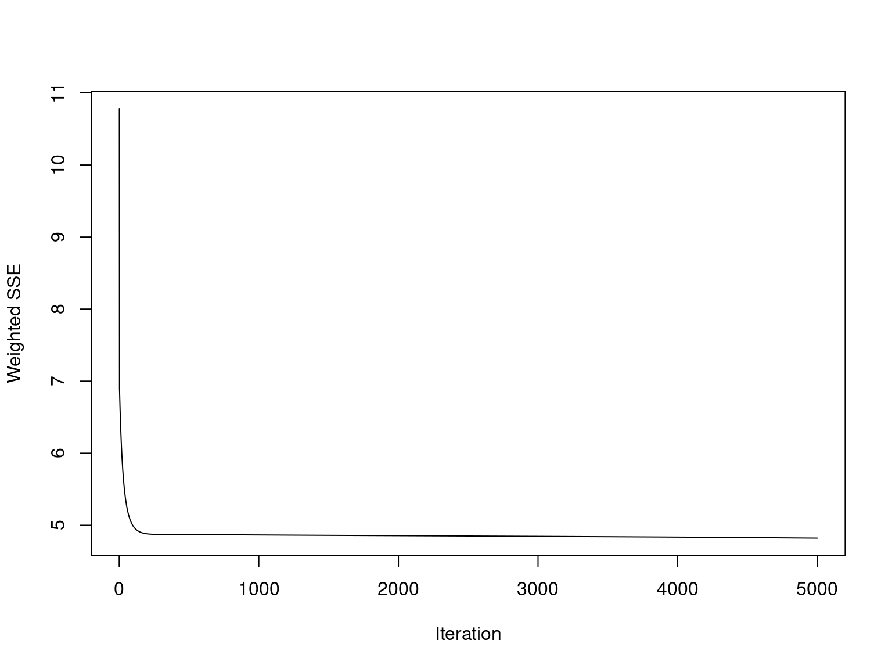

Actividad 5 Modelos Estacionarios en Series de Tiempo - ARIMA
Las 4 prediccionesa 12 semanas utilizando auto.arima para las serie AVR, Line UPS, Online UPS y Storage Battery, muestran una tendencia relativamente constante. Esto sugiere que el modelo está capturando algo de la estructura de los datos, aunque no de manera óptima.
Para los 4 modelos, el gráfico Q-Q de los residuos muestra una desviación de la normalidad en los extremos. Esto sugiere la presencia de valores atípicos o colas más pesadas en los residuos, lo cual indica que los errores no siguen una distribución normal.
De igual manera, la prueba de normalidad de Shapiro-Wilk también confirma que los residuos no son normales (valor p < 0.05), lo que indica que el modelo ARIMA no cumple completamente con el supuesto de normalidad en los residuos.
5.1 AVR ARIMA
autoplot(prediccion_ARIMA_AVR ) +
ggtitle("Predicción con Auto ARIMA para AVR") +
xlab("Semanas") + ylab("Ventas")
residuales_ARIMA_AVR = ARIMA_AVR$residuals
qqnorm(residuales_ARIMA_AVR)
qqline(residuales_ARIMA_AVR)
##
## Shapiro-Wilk normality test
##
## data: residuales_ARIMA_AVR
## W = 0.64247, p-value < 2.2e-165.2 LINE UPS - ARIMA
autoplot(prediccion_ARIMA_Line_UPS ) +
ggtitle("Predicción con Auto ARIMA para Line UPS") +
xlab("Semanas") + ylab("Ventas")
residuales_ARIMA_Line_UPS = ARIMA_Line_UPS$residuals
qqnorm(residuales_ARIMA_Line_UPS)
qqline(residuales_ARIMA_Line_UPS)
##
## Shapiro-Wilk normality test
##
## data: residuales_ARIMA_Line_UPS
## W = 0.9399, p-value = 1.095e-065.3 ONLINE UPS - ARIMA
autoplot(prediccion_ARIMA_Online_UPS ) +
ggtitle("Predicción con Auto ARIMA para Online UPS") +
xlab("Semanas") + ylab("Ventas")
residuales_ARIMA_Online_UPS = ARIMA_Online_UPS$residuals
qqnorm(residuales_ARIMA_Online_UPS)
qqline(residuales_ARIMA_Online_UPS)
##
## Shapiro-Wilk normality test
##
## data: residuales_ARIMA_Online_UPS
## W = 0.94372, p-value = 2.268e-065.4 STORAGE BATTERY - ARIMA
autoplot(prediccion_ARIMA_Storage_Battery ) +
ggtitle("Predicción con Auto ARIMA para Storage Battery") +
xlab("Semanas") + ylab("Ventas")
residuales_ARIMA_Storage_Battery = ARIMA_Storage_Battery$residuals
qqnorm(residuales_ARIMA_Storage_Battery)
qqline(residuales_ARIMA_Storage_Battery)
##
## Shapiro-Wilk normality test
##
## data: residuales_ARIMA_Storage_Battery
## W = 0.87453, p-value = 6.961e-11save(prediccion_ARIMA_AVR, file = "prediccion_ARIMA_AVR.RData")
save(prediccion_ARIMA_Line_UPS, file = "prediccion_ARIMA_Line_UPS.RData")
save(prediccion_ARIMA_Online_UPS, file = "prediccion_ARIMA_Online_UPS.RData")
save(prediccion_ARIMA_Storage_Battery, file = "prediccion_ARIMA_Storage_Battery.RData")